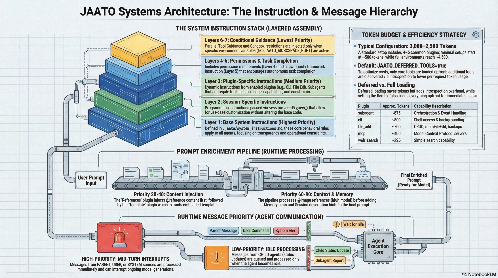

Instruction Sources & Priority Hierarchy
JAATO assembles model instructions from multiple sources in a carefully layered architecture. Instructions are combined at runtime in a specific priority order, while runtime messages follow a separate priority queue for agent communication.

System Instruction Assembly Order
When a session is configured, system instructions are assembled in a fixed order from first to last in the final prompt. Each layer adds context that shapes the model's behavior:
| Layer | Source | Est. Tokens | Purpose |
|---|---|---|---|
| 1. Base Instructions (LOCKED) |
Multi-tier .jaato/instructions/ folder — primary source (see below).Legacy fallback only: .jaato/system_instructions.md (used when no folder exists)
|
0–500+ | Project-wide behavioral rules shared by every agent. LOCKED by the GC system — never garbage-collected regardless of context pressure. |
| 2. Session Instructions | session.configure() parameter |
0–1,000+ | Task-specific guidance provided programmatically |
| 3. Plugin Instructions | Each plugin's get_system_instructions() |
200–3,000+ | Tool-specific usage guides (how to use readFile, run, etc.) |
| 4. Permission Instructions | Permission plugin | ~100–200 | Permission requirements and constraints |
| 5. Task Completion | Framework constant (always) | ~30 | Encourages agentic continuation without unnecessary pauses |
| 6. Parallel Tool Guidance | Conditional on JAATO_PARALLEL_TOOLS=true |
~60 | Instructs model to batch independent tool calls |
| 7. Sandbox Guidance | Conditional on workspace root | ~70 | File operation restrictions in sandboxed environments |
Base Instructions — Multi-Tier Folder Hierarchy
The Base Instructions layer (Layer 1 above) is loaded by
JaatoRuntime._load_base_system_instructions() from a multi-tier
.jaato/instructions/ folder hierarchy. The single legacy file
.jaato/system_instructions.md is a fallback only,
used when no folder exists in any tier.
Tiers are searched in the following precedence order; the first tier that provides a non-empty folder wins for the workspace/user layer:
| Precedence | Tier | Path | Notes |
|---|---|---|---|
| 1 (first / baseline) | Premium | Premium content path (instructions/ sub-folder) |
Loaded unconditionally when the premium content path is present; layered below workspace/user instructions. |
| 2 (first match wins) | Workspace | <config_root>/instructions/ when config_root is set, otherwise <workspace>/.jaato/instructions/ |
Project-level instructions versioned alongside the codebase. |
| 2 (first match wins) | User | ~/.jaato/instructions/ |
Developer-global defaults applied across all workspaces. Used only when the workspace tier folder is absent. |
| Fallback (legacy) | Single file | <config_root>/system_instructions.md or <workspace>/.jaato/system_instructions.md, then ~/.jaato/system_instructions.md |
Consulted only when no instructions/ folder exists in any tier. Deprecated path — migrate to the folder layout. |
Within each folder, all *.md files are sorted
lexicographically by filename and concatenated with double-newline separators.
Numeric prefixes (e.g. 00-, 10-, 15-)
control ordering. README.md (matched exactly, case-insensitive)
is skipped — it documents the folder layout and is not injected as instructions.
The combined base instructions form the BASE tier
of the instruction budget, classified as LOCKED
(instruction_budget.py:65): they appear first in every assembled
prompt and are never garbage-collected, regardless of context pressure.
Suppressing or Overriding Base Instructions
A profile can opt out of the base instructions layer via the
suppress_base_instructions field (config.py:949–960).
When set to true, the .jaato/instructions/ base layer
and the framework's always-on baseline are omitted from that session's prompt;
plugin and persona instructions still apply.
Typical savings are 3–5 k tokens per turn — which can be the difference between fitting a small model's context window and triggering aggressive GC. It is intended for narrow, body-wired agents (echo specialists, single-purpose narrators) that derive no benefit from general-purpose guidance.
Inheritance uses OR semantics (config.py:1645–1657):
once any ancestor in the profile inheritance chain sets
suppress_base_instructions: true, it stays suppressed — a
child profile cannot silently re-enable a parent's suppression. This is a
security primitive: a minimalist base profile cannot be
silently upgraded by an inheritor. A child that genuinely needs base
instructions should not inherit from a minimalist parent.
The field also enables an override pattern: set
suppress_base_instructions: true and supply an agent
persona (.jaato/agents/<name>.md) that provides the complete
replacement system instructions. This gives the persona full control over the
prompt with no shared project-level baseline layered beneath it.
| Pattern | Profile field | Effect |
|---|---|---|
| Default | suppress_base_instructions: false (omit to use default) |
Full base layer + plugin instructions + persona |
| Drop | suppress_base_instructions: true |
Base layer removed; plugin + persona instructions remain |
| Override | suppress_base_instructions: true + agent persona supplies full replacement |
Persona stands alone as the session's complete system instructions |
Agent Identity: Personas vs. system_instructions
The profile field system_instructions is
deprecated (config.py:889) and emits a
DeprecationWarning at runtime. Agent identity and role-specific
instructions belong in a persona file under
.jaato/agents/<name>.md, not in the profile.
The design separates concerns deliberately: the Profile
(.jaato/profiles/<name>.yaml) holds runtime configuration
only — model, provider, plugins, GC strategy, schemas. The
Persona (.jaato/agents/<name>.md) holds
agent identity: role, voice, domain knowledge, and lifecycle behaviour. When a
session names an agent via --agent, the framework renders the
persona Markdown and applies it as the session's system instructions, layered
on top of the base-instruction folder.
Migrate any existing system_instructions: profile field content
to a .jaato/agents/ persona file.
Token Budget Overview
The total instruction overhead depends on which plugins are enabled:
| Configuration | Estimated Tokens | Use Case |
|---|---|---|
| Minimal | ~500–800 | Single simple plugin (e.g., web_search only) |
| Typical | ~2,000–2,500 | Standard setup with 4–5 common plugins |
| Full | ~3,500–4,500 | All plugins + sandbox + extensive base instructions |
With JAATO_DEFERRED_TOOLS=true (the default), initial context is smaller because only core tools are loaded upfront. The model discovers other tools via introspection as needed.
Plugin Token Breakdown
| Plugin | Tokens | Description |
|---|---|---|
cli | ~800 | Shell access, examples, backgrounding |
file_edit | ~700 | CRUD operations, multiFileEdit, backups |
subagent | ~875 | Complex orchestration, event handling |
filesystem_query | ~300 | glob_files, grep_content |
web_search | ~225 | Internet search |
web_fetch | ~200 | URL fetching |
mcp | ~400 | Model Context Protocol servers |
memory | ~250 | Session memory management |
references | ~150 | @file reference handling |
permission | ~100 | Permission system rules |
Prompt Enrichment Pipeline
User prompts are processed through an enrichment pipeline before being sent to the model. Plugins subscribe to this pipeline and are called in priority order (lower numbers run first):
User Prompt → references(20) → template(40) → multimodal(60) → memory(80) → session(90) → Enriched Prompt
Each plugin receives the output of the previous plugin, enabling chained transformations. For example, the references plugin injects @file content, then the template plugin extracts embedded templates from that injected content.
| Priority | Plugin | Purpose |
|---|---|---|
| 20 | references | Injects MODULE.md and other @reference content |
| 40 | template | Extracts embedded templates from injected content |
| 60 | multimodal | Handles @image references |
| 80 | memory | Adds memory hints based on prompt content |
| 90 | session | Adds session description hints |
Runtime Message Priority
During agent execution, messages between agents are queued with priority-based processing. High-priority messages (from PARENT, USER, SYSTEM) can interrupt the model mid-turn, while low-priority messages (from CHILD agents) are queued and processed when the agent becomes idle.
| Source Type | Priority | Processing Mode |
|---|---|---|
PARENT | HIGH | Mid-turn interrupt |
USER | HIGH | Mid-turn interrupt |
SYSTEM | HIGH | Mid-turn interrupt |
CHILD | LOW | Process when idle (FIFO within group) |